Loading New Laurentia
Personal marker
Animal groups
Animal group


Saved filters
Save the current filter settings for later.
Map preferences
Importing permanently wipes all current saved data before loading the selected backup.